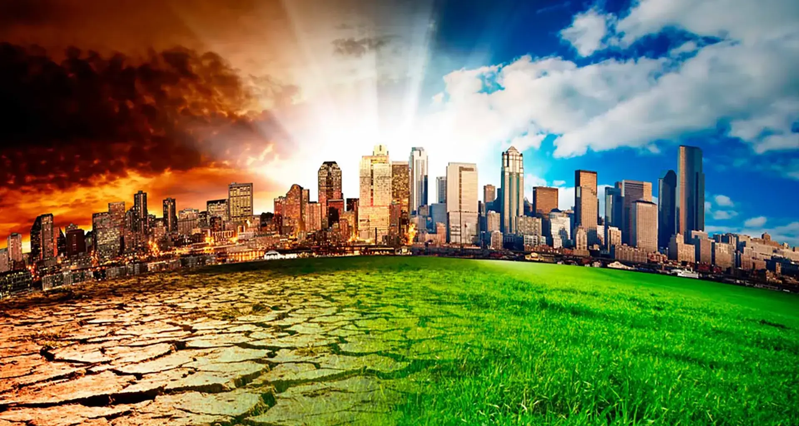
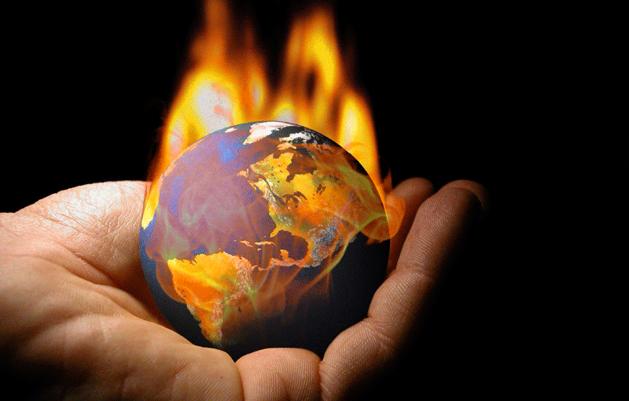

El calentamiento global es el aumento a largo plazo de la temperatura media de la atmósfera terrestre y los océanos, impulsado principalmente por actividades humanas como la quema de combustibles fósiles. Este fenómeno intensifica el efecto invernadero, atrapando calor y provocando consecuencias como el derretimiento de glaciares, la elevación del nivel del mar y fenómenos meteorológicos extremos.


Calentamiento Global: Se refiere específicamente al aumento de temperatura del planeta. Desde la revolución industrial, la temperatura media de la superficie ha aumentado aproximadamente 1 °C. Como evitar el calentamiento global: Para evitar el calentamiento global, es crucial descarbonizar la economía reduciendo el uso de combustibles fósiles (petróleo, carbón, gas) y cambiarlos por energías renovables. A nivel individual, acciones como usar transporte público o bicicleta, ahorrar energía, reciclar, consumir menos y plantar árboles ayudan a disminuir la huella de carbono.
El cambio climático es la variación significativa y duradera de los patrones climáticos terrestres, principalmente por el aumento de temperatura global provocado por actividades humanas, como la quema de combustibles fósiles. Sus efectos incluyen derretimiento de polos, aumento del nivel del mar, sequías e inundaciones extremas, afectando gravemente los ecosistemas y la salud humana. Como prevenir el cambio climatico: La prevención del cambio climático implica reducir las emisiones de gases de efecto invernadero (GEI) mediante la descarbonización energética, el uso de energías renovables, la movilidad sostenible, la eficiencia energética y la protección de ecosistemas. A nivel individual, acciones como aplicar las 3R (reducir, reutilizar, reciclar), ahorrar energía, usar transporte público/bicicleta y consumir localmente son clave.
